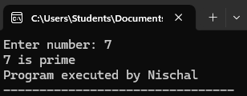
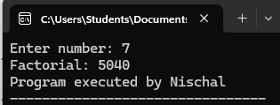
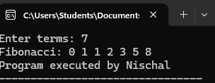
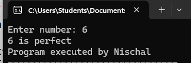
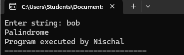

A comprehensive guide to the fundamentals of C programming
C is a general-purpose, procedural programming language developed in 1972 by Dennis Ritchie at Bell Labs. It is one of the most widely used programming languages of all time.
C is often called the "mother of all languages" because many other programming languages have been based on it.
A variable is a name given to a storage area that our programs can manipulate. Each variable in C has a specific type, which determines the size and layout of the variable's memory.
type variable_name;Example:
int age;
float salary;
char grade;type variable_name = value;Example:
int count = 10;
float pi = 3.14;
char letter = 'A';| Data Type | Size (bytes) | Description |
|---|---|---|
| char | 1 | Stores a single character |
| int | 2 or 4 | Stores whole numbers |
| float | 4 | Stores fractional numbers (6-7 decimal digits) |
| double | 8 | Stores fractional numbers (15 decimal digits) |
| void | Represents the absence of type |
Operators are symbols that perform operations on variables and values.
+ (Addition)
- (Subtraction)
* (Multiplication)
/ (Division)
% (Modulus)
++ (Increment)
-- (Decrement)== (Equal to)
!= (Not equal to)
> (Greater than)
< (Less than)
>= (Greater than or equal to)
<= (Less than or equal to)&& (Logical AND)
|| (Logical OR)
! (Logical NOT)if (condition) {
// code to execute if condition is true
} else {
// code to execute if condition is false
}switch (expression) {
case constant1:
// code to execute if expression equals constant1
break;
case constant2:
// code to execute if expression equals constant2
break;
default:
// code to execute if expression doesn't match any case
}While Loop:
while (condition) {
// code to execute while condition is true
}For Loop:
for (initialization; condition; increment) {
// code to execute in each iteration
}Do-While Loop:
do {
// code to execute at least once
} while (condition);A function is a group of statements that together perform a task.
return_type function_name(parameters) {
// function body
return value; // if return_type is not void
}return_type function_name(parameter_list);#include <stdio.h>
// Function declaration
int add(int a, int b);
int main() {
int result = add(5, 3);
printf("Result: %d\n", result);
return 0;
}
// Function definition
int add(int a, int b) {
return a + b;
}An array is a collection of variables of the same type stored in contiguous memory locations.
type arrayName[arraySize];Example:
int numbers[5]; // Declares an array of 5 integerstype arrayName[arraySize] = {value1, value2, ..., valueN};Example:
int numbers[5] = {1, 2, 3, 4, 5};A pointer is a variable that stores the memory address of another variable.
type *pointer_name;Example:
int *ptr; // Pointer to an integerpointer_name = &variable_name;Example:
int var = 20;
int *ptr = &var;A structure is a user-defined data type that allows you to combine data items of different kinds.
struct structure_name {
type member1;
type member2;
// ...
};struct Student {
char name[50];
int age;
float gpa;
};struct structure_name variable_name;Example:
struct Student student1;A prime number is a natural number greater than 1 that has no positive divisors other than 1 and itself.
#include
int main() {
int n, i, flag = 0;
printf("Enter number: ");
scanf("%d", &n);
for(i=2; i<=n/2; i++) {
if(n%i == 0) {
flag = 1;
break;
}
}
if(flag == 0)
printf("%d is prime\n", n);
else
printf("%d is not prime\n", n);
printf("Program executed by Nischal");
return 0;
}
Prime Number Program Output Image
The factorial of a non-negative integer n is the product of all positive integers less than or equal to n.
#include
int main() {
int n, i;
long fact = 1;
printf("Enter number: ");
scanf("%d", &n);
for(i=1; i<=n; i++)
fact *= i;
printf("Factorial: %ld\n", fact);
printf("Program executed by Nischal");
return 0;
}
Factorial Program Output Image
The Fibonacci sequence is a series where the next term is the sum of the previous two terms.
#include
int main() {
int n, t1=0, t2=1, next;
printf("Enter terms: ");
scanf("%d", &n);
printf("Fibonacci: ");
for(int i=1; i<=n; i++) {
printf("%d ", t1);
next = t1 + t2;
t1 = t2;
t2 = next;
}
printf("\nProgram executed by Nischal");
return 0;
}
Fibonacci Program Output Image
A perfect number is a positive integer that is equal to the sum of its proper positive divisors.
#include
int main() {
int n, i, sum=0;
printf("Enter number: ");
scanf("%d", &n);
for(i=1; i Perfect Number Program Output Image
A palindrome is a word, phrase, number, or other sequence of characters that reads the same forward and backward.
#include
#include
int main() {
char s[100];
int i, len, flag=0;
printf("Enter string: ");
scanf("%s", s);
len = strlen(s);
for(i=0; i Palindrome Program Output Image
